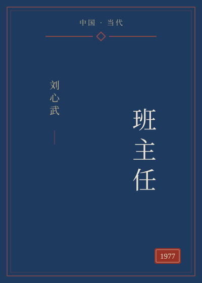
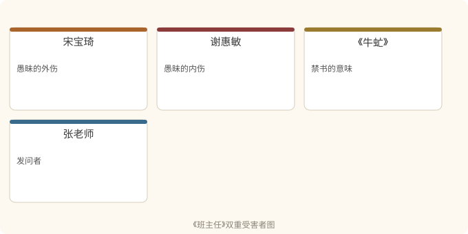

班主任
一、基本信息
| 作者 | 刘心武 |
|---|---|
| 成书/出版 | 1977年发表（中国作家网 C023：写于'十平方的小屋'，1978年获全国优秀短篇小说首奖；发表刊物待核） 刘心武：到了80岁，不需要有写作计划（中国作家网）（官方文学机构） |
| 国别/地区 | 中国 |
| 时代 | 现当代 · 当代 |
| 体裁 | 短篇小说 |
| 语言 | 汉语（白话） |

《班主任》双重受害者图（主题·结构图）
二、创作背景
中国作家网（C023）：'《班主任》被视为伤痕文学的发轫之作'；1978年获全国优秀短篇小说首奖。
意义（C023）：新时期文学的起点之一——'救救孩子'的当代回声（通说待核——谢惠敏与宋宝琦的双重拯救）。
三、内容脉络
班主任张俊石接收小流氓宋宝琦，却发现品学兼优的团支书谢惠敏同样被愚弄——两代'受害者'的对照（情节通说待核）。
《牛虻》作为'禁书'的出场（细节通说待核）。
四、主要人物表
| 人物 | 身份 | 说明 |
|---|---|---|
| 张俊石 | 班主任 | 觉醒的教育者（通说待核） |
| 谢惠敏 | 团支书 | 被'左'的观念戕害的优等生（通说待核） |
| 宋宝琦 | 失足少年 | 另一种愚昧（通说待核） |
五、主题与艺术特点
- 伤痕的发端：精神内伤比外部创伤更深（C023 语境）。
- 教育的危机与'救救孩子'（通说）。
- 《牛虻》与文化禁锢（通说待核）。
六、影响与评论
- 中国作家网：'《班主任》被视为伤痕文学的发轫之作'（C023）。
刘心武：到了80岁，不需要有写作计划（中国作家网）（官方文学机构） - 中国作家网：1978年获全国优秀短篇小说首奖（C023）。
刘心武：到了80岁，不需要有写作计划（中国作家网）（官方文学机构）
七、阅读建议
难点
- 1977年的历史语境（'文革'刚结束）。
- 两部对照人物的道德结构。
- 《刘心武文集》（多家版本，通说待核）。
与《大淖记事》《受戒》对照看1979—81年的解冻。
八、待核实
- 发表刊物（《人民文学》1977年第11期说）核对。
- 谢惠敏/宋宝琦人名核对。
- 《牛虻》情节线索核对。
本页主要来源
刘心武的其他收录作品：钟鼓楼